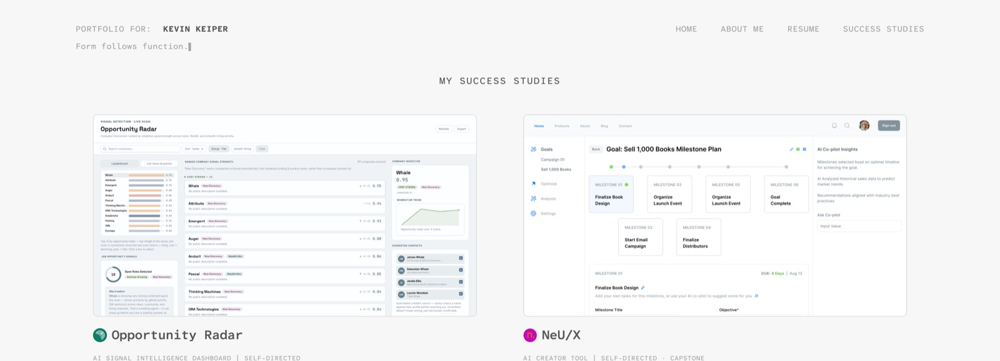
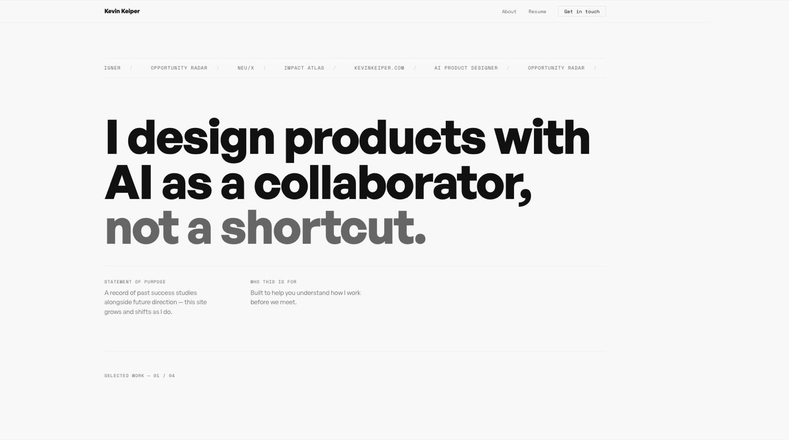
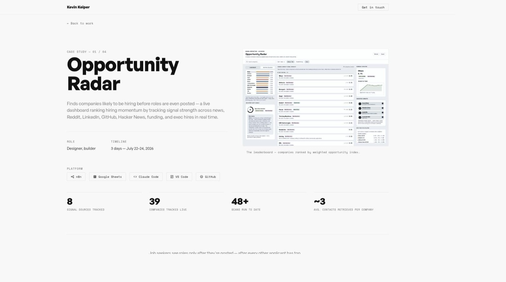

kevinkeiper.com
This site is its own case study, designed and built through direct, iterative collaboration with Claude Code, documented as it happened rather than written up after the fact.

The site's own card image, chosen mid-build, one of many small decisions made live.
The previous site (v3.0) was a static Webflow build: a grid of case study cards, a stats bar, a tools list, all fixed in place.
It didn't grow, and it didn't show how the work actually got made.
v4.0 is meant to be a living document, something that changes as the work changes, and that's honest about being built with AI as a real collaborator rather than a tool used quietly offscreen.
Two written briefs came first (a design brief and a case-study-page brief) but no wireframes.
Everything past that was a live conversation with Claude Code, one decision at a time, with both briefs kept updated as real decisions got made rather than treated as fixed upfront.
Direction changed constantly and visibly within that structure: a simple card grid became a bold alternating-row layout, then a sticky-rail layout borrowed from a pattern on the old Webflow site, refined over dozens of small rounds of feedback.
this site uses sections that when filled up with images make the section tall, long... user needs to remember what the section was about, lose focus as they scroll... you helped implement a left rail right rail solution that im wondering if we can implement here, wdyt
Became the sticky-rail layout now used on every case study page, including this one: a section's title stays pinned while its content scrolls past.
for neux, "what shipped" is all wrong, please replace those wires with final nuex images
Triggered a full re-check of every image on that page, catching several mismatched captions along the way, not just the one flagged.
The main research artifact was the old site itself, auditing what it got right (a working stats bar, a real tools list, personality in a "working with me" section) and what it didn't (static, no story about how any of it was made).

kevinkeiper.com v3.0, the starting point this version replaces.
Execution was the conversation: propose a layout, react to it live, keep what worked, throw out what didn't.
The card grid became full-width alternating rows, which became the sticky-rail layout used across every case study page now, including this one.
Rules got written down as they got discovered: image widths matching paragraph measure, when a gallery earns a masonry layout instead of a grid, when a diagram is too dense to shrink and needs a link-out to a full-size version instead.
Small things got tuned by eye and direct feedback in real time (page background tint, image saturation, sticky-header offsets), not decided in the abstract.
"Rule: images keep their original/native aspect ratio. Never forced-crop to a fixed ratio. All images share the same fixed width; height is not constrained and simply hangs down however long the native ratio makes it, so cards/rows will naturally vary in height, and that's expected, not a bug to fix."
Tokens, component libraries, and Figma variables all came up while working this way, worth stating a real position on rather than staying quiet about.
im trying to feel how figma is even so valuable here when you can design in the DOM instead
Landed on a real stance: Figma still earns its keep for reading someone else's finished system (pulling tokens out of a kit like Glow UI) or syncing design and code across separate people. Solo, working directly in code with instant real previews, staying in Figma just adds a translation step, so this site skips it in favor of the browser.
"When something doesn't fit an existing pattern, that's a real signal to stop and design it deliberately rather than bend one of these — but check here first. Most 'new' needs turn out to already exist under a slightly different name."
A home page and four in-depth case study pages, all sharing one visual system, hosted free on GitHub Pages, version-controlled from the first commit.


Still in progress, this page describes a conversation that hadn't ended when it was written.
The real outcome so far: a working method for building a site this way (propose, react, revise, document) that held up across four very different case studies without losing a consistent system.
- Meta
- AI Workflow
- In Progress